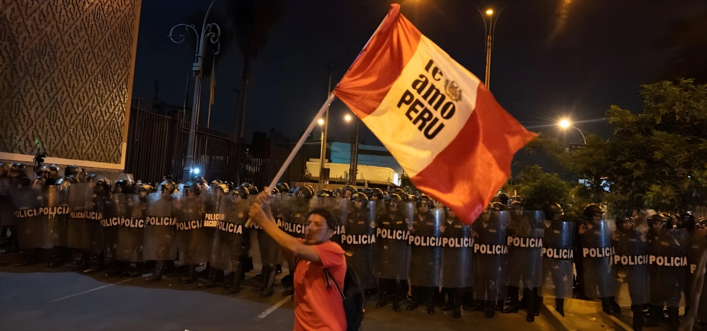

Le 4 octobre 2026, plus de 26 millions de Péruviens ont élu leurs gouverneurs régionaux, leurs maires et leurs conseillers pour 2027-2030. À Lima, Rafael López Aliaga (Renovación Popular) devance de moins d'un point Francis Allison (Avanza País) au décompte de l'ONPE, tandis que plusieurs régions devraient départager leurs candidats lors d'un second tour le 29 novembre.
Dimanche 4 octobre 2026, de 7 h à 17 h, 26 314 724 électeurs inscrits devaient désigner 13 148 autorités : 25 gouverneurs régionaux, 196 maires provinciaux, 1 696 maires de district et leurs conseillers. Le vote est obligatoire, sous peine d'une amende de 27,50 à 110 soles. Ces élections suivent de quelques mois la présidentielle de juin, remportée de justesse par Keiko Fujimori (50,135 % au second tour), investie le 28 juillet.
La journée a commencé avec des retards, faute de membres de bureau présents, et avec des signes d'abstention à Lima ; les bureaux n'ont atteint 99,99 % d'installation qu'en milieu de journée. La campagne, surtout, a été l'une des plus violentes de l'histoire récente : selon le Ministère public, 38 menaces, 11 attaques directes et deux assassinats liés au processus électoral, dont celui de la candidate Susy Aponte Polo, tuée le 19 septembre en Áncash.
| Liste à Lima (tête d'affiche) | Voix valides, ONPE à 92,7 % |
|---|---|
| Renovación Popular (R. López Aliaga) | 27,70 % — 1 443 742 voix |
| Avanza País (F. Allison) | 26,84 % — 1 398 906 voix |
| Somos Perú (C. Bruce) | 15,09 % |
| Podemos Perú | 8,01 % |
Second tour régional, dans les régions où aucun candidat n'a atteint 30 % des voix valides.
Fin attendue du décompte officiel de l'ONPE, qui fixera la liste des régions concernées.
À 92,7 % des actes traités, López Aliaga (27,70 %) devance Allison (26,84 %) de 44 836 voix environ.
Scrutin de 7 h à 17 h ; le sondage sortie des urnes de Datum donne 31,2 % à Renovación Popular contre 25,2 % à Avanza País.
Assassinat de la candidate au gouvernement régional d'Áncash Susy Aponte Polo.
Keiko Fujimori est investie présidente de la République.
Second tour de la présidentielle, que Fujimori remporte avec 50,135 % des voix valides.
À Lima, il n'y a pas de second tour : la liste arrivée en tête l'emporte. Le sondage sortie des urnes donnait 31,2 % à Renovación Popular contre 25,2 % à Avanza País ; le décompte officiel a resserré l'écart, tombé à 0,86 point à 92,7 % des actes traités. Francis Allison, maire de Magdalena, dit qu'il reconnaîtra le résultat, mais compte disputer les actes contestés, qui pourraient faire la différence. Le Jury national des élections (JNE) tranchera.
Le cas de Rafael López Aliaga est singulier. L'ancien maire de Lima ne pouvait pas se représenter immédiatement ; il figurait donc comme premier conseiller municipal sur la liste de Renovación Popular, après le retrait de Luis Rubio de la course à la mairie. S'il est confirmé, il pourrait reprendre le fauteuil. Il soutient que la Constitution interdit de se présenter à la réélection, non d'exercer une autre fonction municipale ; les autorités électorales devront trancher.
« En esas impugnaciones puede estar la diferencia. » (« C'est dans ces contestations que peut se trouver la différence. »)
— Francis Allison, candidat d'Avanza País à Lima, 5 octobre 2026Dans les régions, un gouverneur est élu dès le premier tour avec au moins 30 % des suffrages valides ; sinon, les deux premiers se retrouvent le 29 novembre, date fixée par le JNE. D'après le sondage de Datum, quatorze régions pourraient aller au second tour, dont Áncash, Arequipa, La Libertad, Piura, Lambayeque, Loreto, Puno, Huancavelica et Amazonas. À Callao, Renovación Popular domine avec plus de la moitié des voix, loin devant les autres.
Une mairie de Lima jouée à moins d'un point, deux listes de droite aux coudes, des régions qui se départageront au second tour et des mouvements indépendants plus forts que les grands partis : le scrutin du 4 octobre montre un Pérou politiquement émietté, où le pouvoir local se négocie liste par liste et acte par acte. La violence de la campagne, avec deux assassinats, rappelle le prix de cette compétition, et le respect des résultats par les perdants sera l'autre test de la solidité du système.
El 4 de octubre de 2026, más de 26 millones de peruanos eligieron a sus gobernadores regionales, alcaldes y consejeros para el periodo 2027-2030. En Lima, Rafael López Aliaga (Renovación Popular) supera por menos de un punto a Francis Allison (Avanza País) en el conteo de la ONPE, mientras que varias regiones deberían decidirse en una segunda vuelta el 29 de noviembre.
El domingo 4 de octubre de 2026, de 7 a 17 horas, 26.314.724 electores debían elegir a 13.148 autoridades: 25 gobernadores regionales, 196 alcaldes provinciales, 1.696 alcaldes distritales y sus regidores. El voto es obligatorio, con multas de 27,50 a 110 soles. Estos comicios llegan pocos meses después de las elecciones presidenciales de junio, ganadas por estrecho margen por Keiko Fujimori (50,135 % en la segunda vuelta) e investida el 28 de julio.
La jornada empezó con retrasos por la ausencia de miembros de mesa y con señales de ausentismo en Lima; las mesas solo alcanzaron el 99,99 % de instalación a mediodía. La campaña, sobre todo, ha sido una de las más violentas de la historia reciente: según el Ministerio Público, 38 amenazas, 11 ataques directos y dos asesinatos vinculados al proceso electoral, entre ellos el de la candidata Susy Aponte Polo, asesinada el 19 de septiembre en Áncash.
| Lista en Lima (cabeza de lista) | Votos válidos, ONPE al 92,7 % |
|---|---|
| Renovación Popular (R. López Aliaga) | 27,70 % — 1.443.742 votos |
| Avanza País (F. Allison) | 26,84 % — 1.398.906 votos |
| Somos Perú (C. Bruce) | 15,09 % |
| Podemos Perú | 8,01 % |
Segunda vuelta regional, en las regiones donde ningún candidato alcanzó el 30 % de los votos válidos.
Fin previsto del conteo oficial de la ONPE, que fijará la lista de regiones afectadas.
Con el 92,7 % de actas procesadas, López Aliaga (27,70 %) supera a Allison (26,84 %) por unos 44.836 votos.
Votación de 7 a 17 horas; el flash electoral de Datum da 31,2 % a Renovación Popular y 25,2 % a Avanza País.
Asesinato de la candidata al gobierno regional de Áncash Susy Aponte Polo.
Keiko Fujimori asume la presidencia de la República.
Segunda vuelta presidencial, que Fujimori gana con el 50,135 % de los votos válidos.
En Lima no hay segunda vuelta: gana la lista que queda primera. El flash electoral daba 31,2 % a Renovación Popular frente a 25,2 % de Avanza País; el conteo oficial redujo la brecha, que bajó a 0,86 puntos con el 92,7 % de actas procesadas. Francis Allison, alcalde de Magdalena, dice que reconocerá el resultado, pero que peleará las actas impugnadas, que podrían marcar la diferencia. El Jurado Nacional de Elecciones (JNE) tendrá la última palabra.
El caso de Rafael López Aliaga es singular. El exalcalde de Lima no podía postular de inmediato a la reelección; por eso figuraba como primer regidor en la lista de Renovación Popular, tras la renuncia de Luis Rubio a la candidatura a la alcaldía. Si se confirma el resultado, podría volver al sillón municipal. Sostiene que la Constitución prohíbe postular a la reelección, no ejercer otro cargo municipal; las autoridades electorales tendrán que resolver.
«En esas impugnaciones puede estar la diferencia.»
— Francis Allison, candidato de Avanza País a Lima, 5 de octubre de 2026En las regiones, un gobernador sale elegido en primera vuelta con al menos el 30 % de los votos válidos; si no, los dos primeros se enfrentan el 29 de noviembre, fecha fijada por el JNE. Según el flash de Datum, catorce regiones podrían ir a segunda vuelta, entre ellas Áncash, Arequipa, La Libertad, Piura, Lambayeque, Loreto, Puno, Huancavelica y Amazonas. En el Callao, Renovación Popular domina con más de la mitad de los votos, muy por delante de los demás.
Una alcaldía de Lima decidida por menos de un punto, dos listas de derecha codo con codo, regiones que se definirán en segunda vuelta y movimientos independientes más fuertes que los grandes partidos: la votación del 4 de octubre muestra un Perú políticamente atomizado, donde el poder local se negocia lista por lista y acta por acta. La violencia de la campaña, con dos asesinatos, recuerda el precio de esta competencia, y que los perdedores acepten los resultados será la otra prueba de la solidez del sistema.